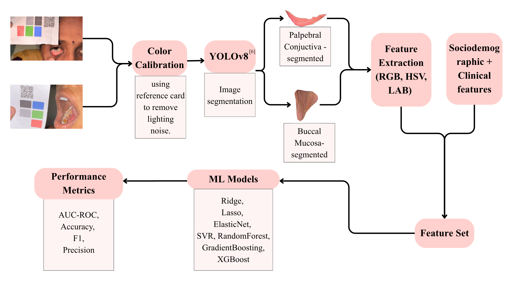
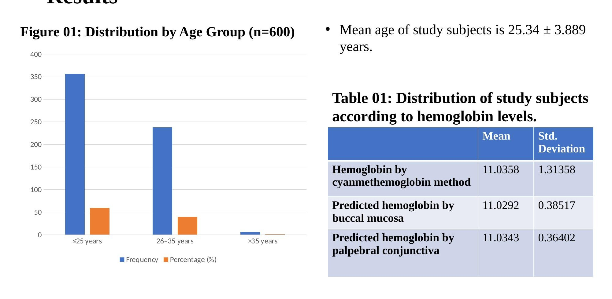
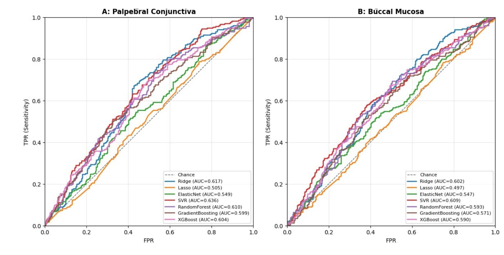

HemoglobinAI
Development of a Smartphone-Based Machine Learning Pipeline for Hemoglobin Level Prediction among Pregnant Women: A Comparative Performance of Palpebral Conjunctiva with Buccal Mucosa Images
Background
- Anemia affects 52.2% of pregnant women in India.1
- Anaemia is directly or indirectly responsible for 40% of maternal mortality, despite national programs such as Anemia Mukt Bharat and Poshan Abhiyan.2
- Routine haemoglobin estimation relies on invasive methods that impose compounded costs: transport, laboratory fees, and lost wages.3
- Conjunctival and mucosal pallor are established clinical indicators of anemia, representing a non-invasive signal amenable to smartphone imaging.4
Objectives
- To develop a machine learning model for haemoglobin level prediction using smartphone images from palpebral conjunctiva and buccal mucosa among pregnant women at a tertiary care centre.
- To compare machine learning models based on palpebral conjunctiva images with those based on buccal mucosa images for haemoglobin level prediction among pregnant women at a tertiary care centre.
Methodology
Study design. Observational cross-sectional study. Source population: pregnant women aged 18–45 attending OBG OPD for routine antenatal checkup at GIMS, Gadag. Study period: 1 January 2025 to 31 December 2025.
Sample size. n = z²pq/d² = 600, computed using prevalence p = 46%,5 q = 54, d = 9% of p = 4.14. The same n = 600 satisfies 5-fold cross-validation requirements. Sampling technique: purposive sampling.
Inclusion. All pregnant women attending the centre who gave written informed consent.
Exclusion. Active eye infections (e.g. conjunctivitis); cosmetic contact lenses; periorbital trauma; blood transfusion or IV iron sucrose within the preceding 15 days.
Data collection. Following IEC approval and written informed consent, data were collected via pre-tested semi-structured questionnaire, including standardised smartphone photographs of the palpebral conjunctiva and buccal mucosa alongside a colour-calibration reference card.
Statistical analysis. Data entered in MS Excel; analysed using frequency, percentage, and chi-square test (SPSS v21).

Results
Among 600 pregnant women, mean age was 25.34 ± 3.889 years. The age distribution and haemoglobin summary statistics are shown below.

The chi-square analysis of the association between laboratory haemoglobin and predicted haemoglobin by imaging site is shown in Table 02.
| Hb by cyanmethemoglobin | Palpebral Conjunctiva | Buccal Mucosa | ||||||
|---|---|---|---|---|---|---|---|---|
| <10 g/dL | 10–11 g/dL | >11 g/dL | Total | <10 g/dL | 10–11 g/dL | >11 g/dL | Total | |
| <10 g/dL | 0.4% (2) | 0.0% (0) | 0.0% (0) | 0.4% (2) | 0.4% (2) | 0.0% (0) | 0.2% (1) | 0.5% (3) |
| 10–11 g/dL | 9.8% (59) | 15.3% (92) | 20.1% (124) | 45.8% (275) | 9.4% (57) | 14.0% (84) | 20.3% (122) | 43.8% (263) |
| >11 g/dL | 9.8% (59) | 16.7% (100) | 27.3% (164) | 53.8% (323) | 10.2% (61) | 18.0% (108) | 27.5% (165) | 55.7% (334) |
| Total | 20.0% (120) | 32.0% (192) | 48.0% (288) | 100% (600) | 20.0% (120) | 32.0% (192) | 48.0% (288) | 100% (600) |
| p value | 0.04 (χ² = 10.1, df = 4) | 0.238 (χ² = 5.524, df = 4) | ||||||
Palpebral conjunctiva shows a statistically significant association with laboratory Hb (p = 0.04); buccal mucosa does not (p = 0.238).
Table 03 reports model performance across both imaging sites. SVR achieves the highest ROC AUC on both sites; palpebral conjunctiva consistently outperforms buccal mucosa across all models and all metrics.
| Model | Palpebral Conjunctiva | Buccal Mucosa | ||||||
|---|---|---|---|---|---|---|---|---|
| AUC | F1 | Acc. | Prec. | AUC | F1 | Acc. | Prec. | |
| Ridge | 0.617 | 0.514 | 0.583 | 0.473 | 0.602 | 0.520 | 0.585 | 0.475 |
| Lasso | 0.505 | 0.179 | 0.573 | 0.364 | 0.497 | 0.211 | 0.575 | 0.386 |
| ElasticNet | 0.549 | 0.392 | 0.565 | 0.433 | 0.547 | 0.413 | 0.565 | 0.438 |
| SVR ★ | 0.636 | 0.522 | 0.593 | 0.484 | 0.609 | 0.519 | 0.598 | 0.489 |
| Random Forest | 0.610 | 0.515 | 0.588 | 0.478 | 0.593 | 0.507 | 0.592 | 0.481 |
| Gradient Boosting | 0.599 | 0.508 | 0.583 | 0.473 | 0.571 | 0.491 | 0.575 | 0.462 |
| XGBoost | 0.604 | 0.518 | 0.585 | 0.475 | 0.590 | 0.496 | 0.570 | 0.458 |
★ Best model by ROC AUC. Acc. = Accuracy, Prec. = Precision.

Conclusion
- Machine learning models based on palpebral conjunctiva and buccal mucosa smartphone images can predict haemoglobin levels in pregnant women.
- Palpebral conjunctiva performs marginally but consistently better than buccal mucosa across all models and metrics.
- SVR outperforms the other six algorithms (Ridge, Lasso, ElasticNet, Random Forest, Gradient Boosting, XGBoost) on both imaging sites.
- Smartphone-based non-invasive screening using either imaging site has potential as an anemia screening tool in low-resource settings.
Recommendations
A multicentric design and a longitudinal follow-up study are the natural next steps to validate generalisability across populations and smartphone hardware.
Live Demo
Upload a conjunctival image, enter clinical parameters, and receive an instant haemoglobin estimate. Open on HuggingFace →
References
- International Institute for Population Sciences (IIPS) and ICF. National Family Health Survey (NFHS-5), 2019–21: India. Mumbai: IIPS; 2021.
- Singh A, Mangal M. Laboratory methods for estimation of hemoglobin: A review. Int J Adv Med. 2018;5(4):877–881.
- Mannino RG, Myers DR, Ahn B, et al. Smartphone app for non-invasive detection of anemia using only patient-sourced photos. Nat Commun. 2018;9(1):4924.
- Suner S, Parthasarathy S, Kasikcioglu E. Prediction of anemia from photographs of the palpebral conjunctiva. JAMA Netw Open. 2021;4(5):e215599.
- International Institute for Population Sciences (IIPS) and ICF. National Family Health Survey (NFHS-4), India, 2015–16: Karnataka. Mumbai: IIPS; 2017.
- Jocher G, Chaurasia A, Qiu J. Ultralytics YOLO [v8.0.0]. 2023. github.com/ultralytics/ultralytics
The authors thank the Director, Principal, and Head of Department for permission to conduct this study; PG residents and interns for assistance with data collection; and all participants for their willing participation.